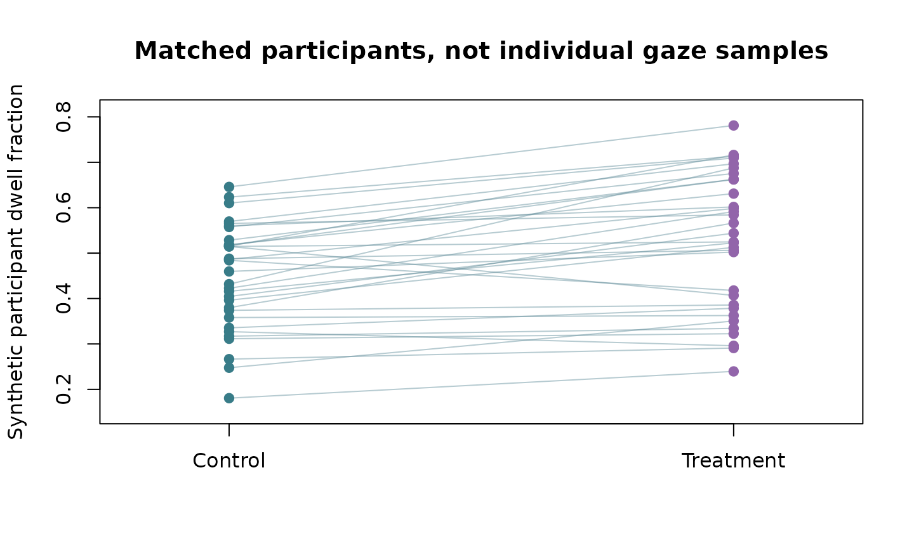
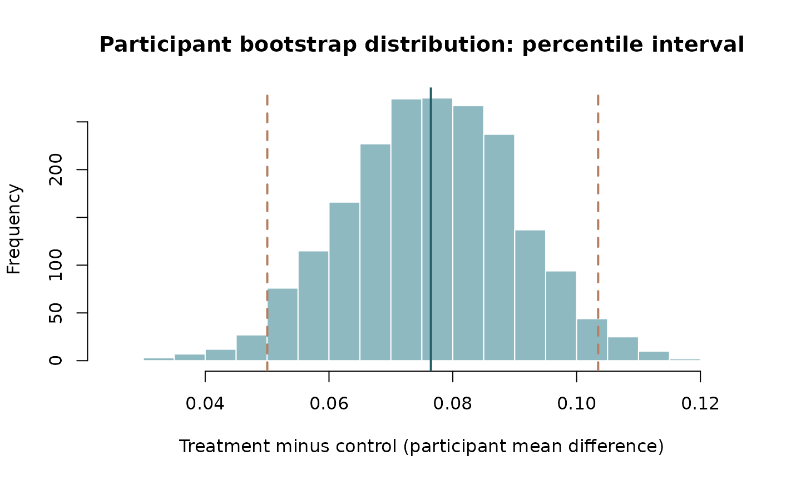

DABEST-style estimation graphics for Gazepoint studies
Source:vignettes/dabest-estimation-designs.Rmd
dabest-estimation-designs.RmdRaw observations, contrast estimation and scientific independence
The DABEST Python and official R dabestr implementation provide Gardner–Altman and Cumming estimation plots: raw measurements, paired slopegraphs when warranted, bootstrap effect-size distributions, and confidence intervals.
Use the actual R dabestr package when you want its
validated plotting API or BCa confidence intervals rather than copying
Python internals. A narrower original, participant-level ggplot
implementation is in the development branch of gpbiometrics,
plot_gazepoint_estimation(). For a strict GP3 analysis,
first aggregate fixation/AOI/pupil measures to the estimand’s
participant/trial unit.
# Conceptual example of a participant-level comparison, not real study data:
library(dabestr)
dabest_obj <- dabestr::load(
summary_by_participant, x = Condition, y = MeanDwell,
idx = c("Control", "Treatment")
)
dabestr::dabest_plot(dabestr::mean_diff(dabest_obj), float_contrast = FALSE)Do not treat raw 60-Hz gaze samples as independent
participants. For repeated-participant conditions supply a unique
subject ID to dabestr’s paired loading mode, or use
gpbiometrics::plot_gazepoint_estimation with
paired=TRUE on matched participant-level rows.
For model-adjusted contrasts or random-effects GLMM estimates, raw mean difference plots are descriptive and should be accompanied by a separate model-based effect/uncertainty visualization, not substituted for the hierarchical inferential estimand.
This is an educational integration note and adds no duplicate estimator to gp3tools. No release has been triggered.
Rendered paired estimation demonstration (synthetic)
The plots below are computed during website construction using only base R. They illustrate the visual grammar of paired estimation, rather than claiming to be DABEST output or its BCa bootstrap estimator.
set.seed(20261009)
n <- 32L
baseline <- stats::rnorm(n, mean = .48, sd = .11)
treatment <- baseline + stats::rnorm(n, mean = .09, sd = .07)
graphics::plot(
NA, xlim = c(.8, 2.2),
ylim = range(baseline, treatment) + c(-.03, .03),
xaxt = "n", xlab = "", ylab = "Synthetic participant dwell fraction",
main = "Matched participants, not individual gaze samples"
)
graphics::axis(1, at = 1:2, labels = c("Control", "Treatment"))
graphics::segments(
1, baseline, 2, treatment,
col = grDevices::adjustcolor("#608B9A", alpha.f = .45)
)
graphics::points(rep(1, n), baseline, pch = 19, col = "#387C88")
graphics::points(rep(2, n), treatment, pch = 19, col = "#9265AA")
difference <- treatment - baseline
resampled <- replicate(
2000L, mean(sample(difference, size = length(difference), replace = TRUE))
)
bounds <- stats::quantile(resampled, c(.025, .975))
graphics::hist(
resampled, breaks = 25, col = "#8EB9C1", border = "white",
xlab = "Treatment minus control (participant mean difference)",
main = "Participant bootstrap distribution: percentile interval"
)
graphics::abline(v = mean(difference), col = "#245E69", lwd = 2)
graphics::abline(v = bounds, col = "#B57D61", lty = 2, lwd = 2)
These are synthetic practice figures, not empirical
evidence. Bootstrap resamples entire participant differences; the result
is a percentile interval, not the BCa interval of the
maintained R dabestr implementation. The full fitted-model
uncertainty remains necessary for clustered generalized or multilevel
estimands.